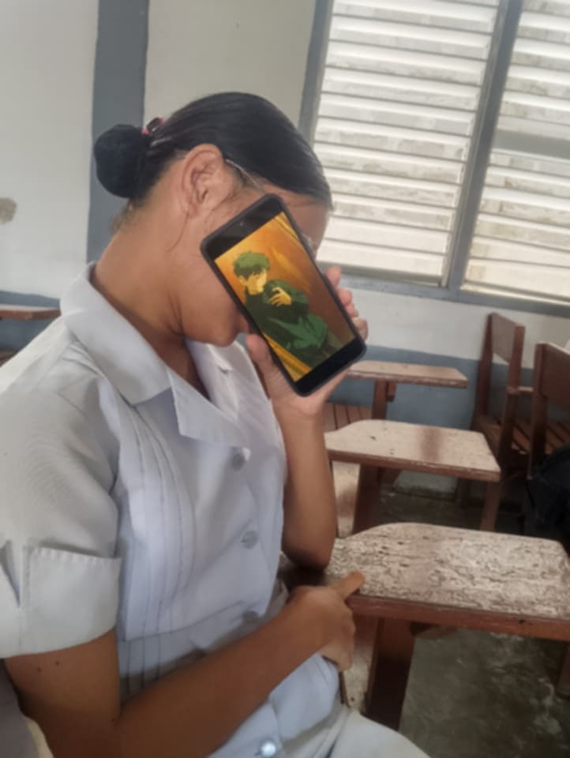

Some days feel small in number… but endless in meaning.
209 days may not sound like forever, but in these days I found laughter, comfort, and someone I genuinely care about.
I know we had misunderstandings… and I’m sorry for the times I hurt you. I’m still learning how to love better, with patience and understanding.

This is where it all began. This where our path crossed. One of the biggest mistake, but also the best mistake! Na buti nalang pala sinugal ko kung anong mayroon sakin mapasakin ka lang.
The moment reality caught up to the anticipation. Fist meet, first hug, first kiss. This is the moment that I felt special for you. Nagsabay tayong umuwi, first time kong mahagkan ka sa mga braso ko, first time kong maging komportable sa tabi mo.
A formal step into something beautiful. At this moment di ako makapaniwala, yung babaeng tinatago-tago ko eh kasama ko nang nagdedate ngayon. We sat on the shore, you hugged me on your chest, you made me feel that everything is worth to give up makasama ka lang. this is the moment that you willingly kissed me with no regression.
Finally! A moment with you without interruptions. Long hugs, long kiss, carried you on my back. How I wish to be like that all the time.
This is where we depart. How sad it is to reminisce na last meet na pala natin yun. Iloveyou!
It’s strange how a specific block of time can completely rewrite your routine. It's strange how a mistake can be the greatest turning point. Before these 209 days, things were different. Then you happened, and suddenly my calendar had landmarks—days that were no longer just dates, but moments where I laughed harder than I had in a long time, or felt a type of comfort that’s incredibly rare to find.
We weren't perfect. I know we had our misunderstandings, our miscommunications, and the quiet moments where things felt heavy. I am genuinely sorry for the times I fell short or caused you pain. I’ve realized that learning to love and care for someone properly isn't an overnight switch—it takes a level of patience and understanding that I’m still actively discovering day by day.
But looking back, the noise fades out and only the genuine parts remain. Thank you for sharing these chapters with me. Thank you for the perspective, the quiet moments, and for being someone who left an indelible mark on my world. No matter how the distance changes things or where our paths split from this point on, a real piece of my care stays with you.
Love, you are the greatest thing for me, you made me feel special and welcoming. At least for me you are the one I love the most. Join me for the next chapters, next episodes, di kita bibiguin.
I LOVE YOU THE MOST!
HAPPY 7TH MONTHSARY LOVE.
— dahby